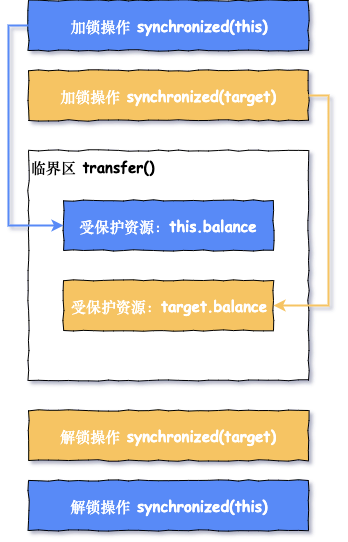
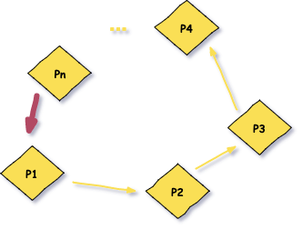
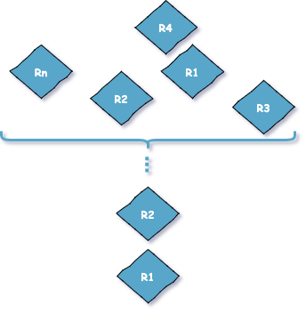

原文连接:https://www.cnblogs.com/FraserYu/p/11756684.html
写在前面
上一篇文章共享资源那么多，如何用一把锁保护多个资源？ 文章我们谈到了银行转账经典案例，其中有两个问题:
- 单纯的用 synchronized 方法起不到保护作用(不能保护 target)
- 用 Account.class 锁方案，锁的粒度又过大，导致涉及到账户的所有操作(取款，转账，修改密码等)都会变成串行操作
如何解决这两个问题呢？咱们先换好衣服穿越回到过去寻找一下钱庄，一起透过现象看本质，dengdeng deng.......
来到钱庄，告诉柜员你要给铁蛋儿转 100 铜钱，这时柜员转身在墙上寻找你和铁蛋儿的账本，此时柜员可能面临三种情况:
- 理想状态: 你和铁蛋儿的账本都是空闲状态，一起拿回来，在你的账本上减 100 铜钱，在铁蛋儿账本上加 100 铜钱，柜员转身将账本挂回到墙上，完成你的业务
- 尴尬状态: 你的账本在，铁蛋儿的账本被其他柜员拿出去给别人转账，你要等待其他柜员把铁蛋儿的账本归还
- 抓狂状态: 你的账本不在，铁蛋儿的账本也不在，你只能等待两个账本都归还
放慢柜员的取账本操作，他一定是先拿到你的账本，然后再去拿铁蛋儿的账本，两个账本都拿到(理想状态)之后才能完成转账，用程序模型来描述一下这个拿取账本的过程:

我们继续用程序代码描述一下上面这个模型:
class Account {
private int balance;
// 转账
void transfer(Account target, int amt){
// 锁定转出账户
synchronized(this) {
// 锁定转入账户
synchronized(target) {
if (this.balance > amt) {
this.balance -= amt;
target.balance += amt;
}
}
}
}
}这个解决方案看起来很完美，解决了文章开头说的两个问题，但真是这样吗？
我们刚刚说过的理想状态是钱庄只有一个柜员(既单线程)。随着钱庄规模变大，墙上早已挂了非常多个账本，钱庄为了应对繁忙的业务，开通了多个窗口，此时有多个柜员(多线程)处理钱庄业务。
柜员 1 正在办理给铁蛋儿转账的业务，但只拿到了你的账本；柜员 2 正在办理铁蛋儿给你转账的业务，但只拿到了铁蛋儿的账本，此时双方出现了尴尬状态，两位柜员都在等待对方归还账本为当前客户办理转账业务。

现实中柜员会沟通，喊出一嗓子 老铁，铁蛋儿的账本先给我用一下，用完还给你，但程序却没这么智能，synchronized 内置锁非常执着，它会告诉你「死等」的道理，最终出现死锁
Java 有了 synchronized 内置锁，还发明了显示锁 Lock，是不是就为了治一治 synchronized 「死等」的执着呢？😏
解决方案
如何解决上面的问题呢？正所谓知己知彼方能百战不殆，我们要先了解什么情况会发生死锁，才能知道如何避免死锁，很幸运我们可以站在巨人的肩膀上看待问题
Coffman 总结出了四个条件说明可以发生死锁的情形:
Coffman 条件
互斥条件：指进程对所分配到的资源进行排它性使用，即在一段时间内某资源只由一个进程占用。如果此时还有其它进程请求资源，则请求者只能等待，直至占有资源的进程用毕释放。
请求和保持条件：指进程已经保持至少一个资源，但又提出了新的资源请求，而该资源已被其它进程占有，此时请求进程阻塞，但又对自己已获得的其它资源保持不放。
不可剥夺条件：指进程已获得的资源，在未使用完之前，不能被剥夺，只能在使用完时由自己释放。
环路等待条件：指在发生死锁时，必然存在一个进程——资源的环形链，即进程集合{P1，P2，···，Pn}中的 P1 正在等待一个 P2 占用的资源；P2 正在等待 P3 占用的资源，……，Pn 正在等待已被 P0 占用的资源。

这几个条件很好理解，其中「互斥条件」是并发编程的根基，这个条件没办法改变。但其他三个条件都有改变的可能，也就是说破坏另外三个条件就不会出现上面说到的死锁问题
破坏请求和保持条件
每个柜员都可以取放账本，很容易出现互相等待的情况。要想破坏请求和保持条件，就要一次性拿到所有资源。
作为程序猿你一定听过这句话:
任何软件工程遇到的问题都可以通过增加一个中间层来解决
我们不允许柜员都可以取放账本，账本要由单独的账本管理员来管理
也就是说账本管理员拿取账本是临界区，如果只拿到其中之一的账本，那么不会给柜员，而是等待柜员下一次询问是否两个账本都在
//账本管理员
public class AccountBookManager {
synchronized boolean getAllRequiredAccountBook( Object from, Object to){
if(拿到所有账本){
return true;
} else{
return false;
}
}
// 归还资源
synchronized void releaseObtainedAccountBook(Object from, Object to){
归还获取到的账本
}
}
public class Account {
//单例的账本管理员
private AccountBookManager accountBookManager;
public void transfer(Account target, int amt){
// 一次性申请转出账户和转入账户，直到成功
while(!accountBookManager.getAllRequiredAccountBook(this, target)){
return;
}
try{
// 锁定转出账户
synchronized(this){
// 锁定转入账户
synchronized(target){
if (this.balance > amt){
this.balance -= amt;
target.balance += amt;
}
}
}
} finally {
accountBookManager.releaseObtainedAccountBook(this, target);
}
}
}破坏不可剥夺条件
上面已经给了你小小的提示，为了解决内置锁的执着，Java 显示锁支持通知(notify/notifyall)和等待(wait)，也就是说该功能可以实现喊一嗓子 老铁，铁蛋儿的账本先给我用一下，用完还给你 的功能，这个后续将到 Java SDK 相关内容时会做说明
破坏环路等待条件
破坏环路等待条件也很简单，我们只需要将资源序号大小排序获取就会解决这个问题，将环路拆除

继续用代码来说明:
class Account {
private int id;
private int balance;
// 转账
void transfer(Account target, int amt){
Account smaller = this
Account larger = target;
// 排序
if (this.id > target.id) {
smaller = target;
larger = this;
}
// 锁定序号小的账户
synchronized(smaller){
// 锁定序号大的账户
synchronized(larger){
if (this.balance > amt){
this.balance -= amt;
target.balance += amt;
}
}
}
}
}当 smaller 被占用时，其他线程就会被阻塞，也就不会存在死锁了.
附加说明
在实际业务中，关于 Account 都会是数据库对象，我们可以通过事务或数据库的乐观锁来解决的。另外分布式系统中，账本管理员这个角色的处理也可能会用 redis 分布式锁来解决.
在处理破坏请求和保持条件时，我们使用的是 while 循环方式来不断请求锁的时候，在实际业务中，我们会有 timeout 的设置，防止无休止的浪费 CPU 使用率
另外大家可以尝试使用阿里开源工具 Arthas 来查看 CPU 使用率，线程等相关问题，github 上有明确的说明
总结
计算机的计算能力远远超过人类，但是他的智慧还需要有带提高，当看待并发问题时，我们往往认为人类的最基本沟通计算机也可以做到，其实不然，还是那句话，编写并发程序，要站在计算机的角度来看待问题
粗粒度锁我们不提倡，所以会使用细粒度锁，但使用细粒度锁的时候，我们要严格按照 Coffman 的四大条件来逐条判断，这样再应用我们这几个解决方案来解决就好了
灵魂追问
- 破坏请求和保持条件时，处理能力的瓶颈在账本管理员那里，那你觉得这种处理方式会提高并发量吗？
- 破坏请求保持条件的方法和破坏环路等待的方法，你觉得那种方式更好
- 破坏请求和保持条件时，如果代码换成下面的样子会发生什么？
public void transfer(Account target, int amt){
// 一次性申请转出账户和转入账户，直到成功
while(accountBookManager.getAllRequiredAccountBook(this, target)){}
try{
// 锁定转出账户
synchronized(this){
// 锁定转入账户
synchronized(target){
if (this.balance > amt){
this.balance -= amt;
target.balance += amt;
}
}
}
} finally {
accountBookManager.releaseObtainedAccountBook(this, target);
}
}
}提高效率工具

- 这次走进并发的世界，请不要错过
- 学并发编程，透彻理解这三个核心是关键
- 并发Bug之源有三，请睁大眼睛看清它们
- 可见性有序性，Happens-before来搞定
- 解决原子性问题？你首先需要的是宏观理解
- 面试并发volatile关键字时，我们应该具备哪些谈资？
欢迎持续关注公众号：「日拱一兵」
- 前沿 Java 技术干货分享
- 高效工具汇总 | 回复「工具」
- 面试问题分析与解答
- 技术资料领取 | 回复「资料」
以读侦探小说思维轻松趣味学习 Java 技术栈相关知识，本着将复杂问题简单化，抽象问题具体化和图形化原则逐步分解技术问题，技术持续更新，请持续关注......